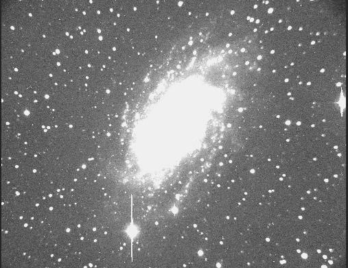

Here you see the sum of two raw readout from the CCD camera, each 30 minutes. In this example, the galaxy NGC 2403 is imaged. Since the night sky is very bright in the ultraviolet, the galaxy's signal is very close to the level of the background, and the image is dominated by foreground stars.
